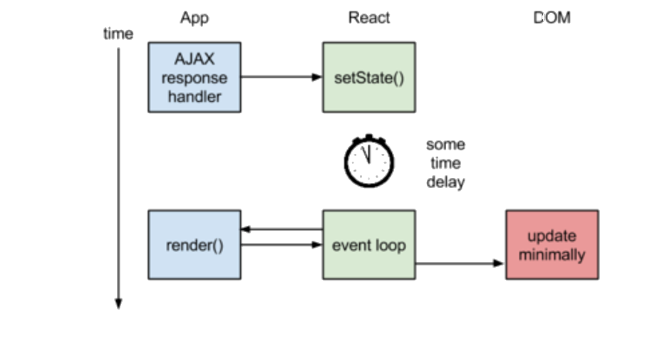
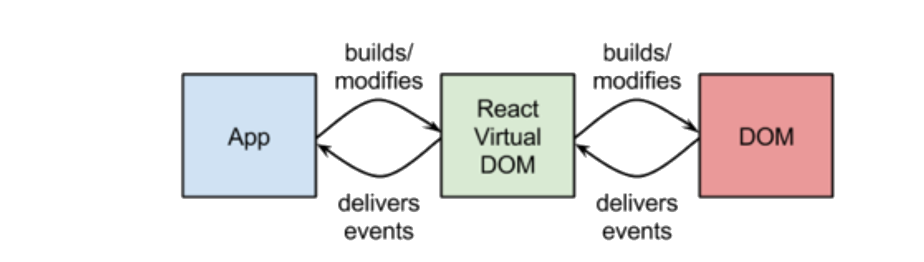
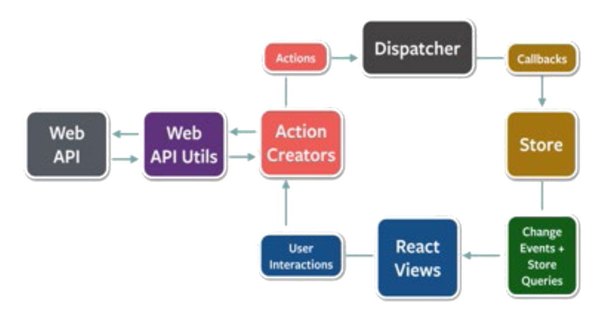

React.js Essentials
Full-duplex, Real-time Web Communication
By: Hemanth H.M.
WHAT IS REACT.JS?
React (a.k.a. ReactJS or React.js) is a JavaScript library for creating user interfaces, open sourced to the world by Facebook and Instagram team in 2013. One might think of it as the "View" in the "Model-View- Controller" pattern.
React's main goal is to make development of UI components easy and modular. It is intended to ease the process of building large applications using data that changes over time.
React was created by Jordan Walke, a software engineer at Facebook, with the influence of XHP, a PHP-based component system that is still in use at Facebook, but also by functional programming ideas. Pete Hunt wanted to use React at Instagram, so he pushed to extract React from Facebook-specific code and open source it.
React has gained a lot of popularity for its concept of a "virtual-DOM", which allows it to determine which parts of the DOM have changed by diffing the new version with the stored virtual DOM, and using the result to determine how to most efficiently update the browser's DOM.
HOW THE MAGIC HAPPENS
To get an idea of what's going on inside React, take a look at the following diagrams demonstrating how React.js rendering and the React Virtual DOM work: 
FIGURE 1:REACT.JS RENDERING 
FIGURE 2:THE REACT VIRTUAL DOM
React basically batches DOM updates and then applies minimal diffs to the real DOM.
A SIMPLE “HELLO” COMPONENT
React components implement a render() method that takes input data and returns what to display.
Here is an example of a simple "Hello" Component:
var Hello = React.createClass({
render: function () {
return <div>Hello {this.props.name}</div>
}
});
React.render(>Hello name="World" />, document.body);NOTE:The XML-like syntax shown is called JSX.
Here is the same component without JSX:
var Hello = React.createClass({displayName: "Hello",
render: function() {
return React.createElement("div", null, "Hello ", this.
props.name);
}
});
React.render(React.createElement(Hello, {name: "World"}), mountNode);COMPONENT SPECIFICATIONS
| NAME | DESCRIPTION |
|---|---|
| render | The render() function should be pure, meaning that it does not modify the component state. It should examine this. props and this.state and return a single child element. |
| getInitialState | Invoked once before the component is mounted. The return value will be used as the initial value of this.state. |
| getDefaultProps | Invoked once and cached when the class is created. Values in the mapping will be set on this.props. |
| propTypes | The propTypes object allows you to validate props being passed to your components. |
| mixins | The mixins array allows you to use mixins to share behavior among multiple components. |
| statics | The statics object allows you to define static methods that can be called on the component class. |
| displayName | The displayName string is used in debugging messages. JSX sets this value automatically. |
Components api
| NAME | DESCRIPTION |
|---|---|
| setState | Merges nextState with the current state. |
| replaceState | Like setState(), but deletes any pre-existing state keys that are not in nextState. |
| forceUpdate | Call render() on the component, skipping shouldComponentUpdate(). |
| React.findDOMNode (0.13+) | Returns the corresponding native browser DOM element |
| isMounted | Returns true if the component is rendered into the DOM. |
| setProps | Changes the properties and triggers a rerender. |
| replaceProps | Like setProps(), but deletes any preexisting props instead of merging the two objects. |
Lifecycle methods
| NAME | DESCRIPTION |
|---|---|
| componentWillMount | Invoked once, both on the client and server, immediately before the initial rendering occurs. |
| componentDidMount | Invoked on the client immediately after the initial rendering occurs. |
| componentWillReceiveProps | Invoked when a component is receiving new prop. Use setState() here. |
| shouldComponentUpdate | Invoked before rendering when new props or state are being received. Skips render() if it returns false. |
| componentWillUpdate | Invoked immediately before rendering when new props or state are being received. Can't use setState() here. |
| componentDidUpdate | Invoked immediately after the component's updates are flushed to the DOM. Operate on the DOM here. |
| componentWillUnmount | Invoked immediately before a component is unmounted from the DOM. |
States and properties
Props and states are both plain JS objects; a change within one of them will trigger a render. These objects are deterministic.
<VideoComponent fullscreen={true} />
// props
this.props.fullscreen //=> true
// state
this.setState({ user: 'hemanth' });
this.replaceState({ ... });
this.state.username //=> 'hemanth'
render: function () {
return <div className={this.props.fullscreen ? 'full' :
''}>
Hello, {this.state.username};
<div>
}Pre-populates states and props:
React.createClass({
getInitialState: function () {
return { comments: [] };
},
getDefaultProps: function () {
return { name: "Hello" };
}
);Deciding when to use props and went to use state might get tricky. The following table will help to simplify this decision:
| DECIDING FACTOR | PROPS | STATE |
|---|---|---|
| Can get initial value from parent Component? | Yes | Yes |
| Can be changed by parent Component? | Yes | No |
| Can set default values inside Component? | Yes | Yes |
| Can change inside Component? | No | Yes |
| Can set initial value for child Components? | Yes | Yes |
| Can change in child Components? | Yes | No |
AJAX REQUESTS
React by default doesn't provide a helper method to manage AJAX requests, but you can use any other third party JavaScript library-like jQuery or Zepto-to make necessary AJAX requests.
Below is a sample code snippet that performs an AJAX request on props.url and on success sets the data state. In case of an error, it just uses console.error to report the error.
NOTE:Make sure that the execution context (this) is bound to the success and error callbacks.
componentDidMount: function() {
$.ajax({
url: this.props.url,
dataType: 'json',
cache: false,
success: function(data) {
this.setState({data: data});
}.bind(this),
error: function(xhr, status, err) {
console.error(this.props.url, status, err.toString());
}.bind(this)
});
}STYLING YOUR COMPONENTS
In React, styles are mentioned in line, but unlike the traditional way of inline CSS strings, here we specify each style as an object whose key is the camelCased version of the style name, and whose value is the style's value (usually a string).
var divStyle = {
color: 'white',
backgroundImage: 'url(' + imgUrl + ')',
WebkitTransition: 'all', // note the capital 'W' here
msTransition: 'all'
// 'ms' is the only lowercase vendor prefix
};
React.render(<div style={divStyle}>Hello World!</div>,
mountNode);Most numeric values at the end of a style prop receive an automatic "px" specification added to them (e.g., "width: 10" is read as "width: 10px"). Here is a list of properties that won't get the automatic "px" suffix:
- boxFlex
- boxFlexGroup
- columnCount
- columnCount
- fillOpacity
- flex
- flexGrow
- flexPositive
- flexShrink
- flexNegative
- fontWeight
- lineClamp
- lineHeight
- opacity
- order
- orphans
- strokeOpacity
- widows
- zoom
DOM HELPERS
References:Help to access the DOM nodes:
<input ref="firstName"> this.refs.firstName React.findDOMNode(this.refs.firstName).focus() React.findDOMNode(this.refs.firstName).value
DOM Events:Help to handle DOM events:
<input type="text"
value={this.state.value}
onChange={this.handleChange} />
handleChange: function(event) {
this.setState({ value: event.target.value });
}Two-way data bindings with mixins:
Email: <input type="text" valueLink={this.linkState('email')}
/>
React.createClass({
mixins: [React.addons.LinkedStateMixin]
});
this.state.emailValidating properties:
| NAME | DESCRIPTION |
|---|---|
| Primative Types |
|
| Reactive Elements |
|
| Enumerables |
|
| Arrays and Objects |
|
Sample usage:
React.createClass({
propTypes: {
email: React.PropTypes.string,
firstName: React.PropTypes.string,
age: React.PropTypes.number,
gender: React.PropTypes.oneOf(['M','F','NA'])
node: React.PropTypes.node,
cb: React.PropTypes.func.isRequired,
}
});Custom validation:
propTypes: {
customProp: function(props, propName, componentName) {
if (!/matchme/.test(props[propName])) {
return new Error('Validation failed!');
}
}
}React addons
React.addons are useful utilities for building React apps. These are currently experimental, and not yet part of core React.
- TransitionGroup and CSSTransitionGroup deal with animations and transitions
- LinkedStateMixin helps in two-way data binding.
- cloneWithProps makes shallow copies of React components and changes their props.
- createFragment helps to create a set of externally-keyed children.
- update helps to deal with immutable data.
- PureRenderMixin is a performance booster in certain situations.
Apart from these there are few addons that are available in the development (unminified) version of React only:
- TestUtils, simple helpers for writing test cases
- Perf, for measuring performance and giving you hints on where to optimize.
To get these addons, use react-with-addons.js (and its minified counterpart), rather than the common react.js.
When using the react package from npm, simply use require('react/addons') instead of require('react') to get React with all of the addons.
NOTE:Add-ons have moved to separate packages in React v0.14+:
- react-addons-clone-with-props
- react-addons-create-fragment
- react-addons-css-transition-group
- react-addons-linked-state-mixin
- react-addons-perf
- react-addons-pure-render-mixin
- react-addons-shallow-compare
- react-addons-test-utils
- react-addons-transition-group
- react-addons-update
- ReactDOM.unstable_batchedUpdates in react-dom
Creating your own mixins
var TimeOutMixin = {
componentWillMount: function() { .. }
}
var TickTock = React.createClass({
mixins: [TimeOutMixin]
}React on es2015/es6
NOTE:The following are experimental, and you must use a transpiler for this to work.
Classes
class Animal extends React.Component {
render() {
return <img alt={this.props.name} src={this.props.src} />
}
}Property Initializers
var Video = React.createClass({
getDefaultProps() {
return {
autoPlay: false,
maxLoops: 10,
};
},
getInitialState: function() {
return {
loopsRemaining: this.props.maxLoops,
};
},
propTypes: {
autoPlay: React.PropTypes.bool.isRequired,
maxLoops: React.PropTypes.number.isRequired,
posterFrameSrc: React.PropTypes.string.isRequired,
videoSrc: React.PropTypes.string.isRequired,
},
});Arrow Functions
class PostInfo extends React.Component {
handleOptionsButtonClick = (e) => {
this.setState({showOptionsModal: true});
}
}Dynamic property names with template strings
class Form extends React.Component {
onChange(inputName, e) {
this.setState({
[`${inputName}Value`]: e.target.value,
});
}
}Destructuring & spread attributes
class AutoloadingPostsGrid extends React.Component {
render() {
var {
className,
...others,
// all properties of this.props except for className
} = this.props;
return <PostsGrid {...others} />
}
}CoffeeScript and React
For React v0.13.0+
div = React.createFactory 'div' class Counter extends React.Component @propTypes = initialCount: React.PropTypes.number @defaultProps = initialCount: 0 constructor: (props) -> super props @state = count: props.initialCount tick: => @setState count: @state.count + 1 render: -> div onClick: @tick, 'Clicks: ' @state.count
CONVENTIONS FOR REACT DOM & JSX
A few patterns and best practices to get you started:
- React DOM elements are expected to be in camelCase.
- The camelCasing of DOM matches what you would write for custom components:
<Typeahead onClick=../> and <div onClick=../>
- These camelCased attributes are usually what you write when updating the DOM via JS (input.maxLength).
- One current confusing exception is that class= is normalized automatically into className= at transform time.
- Use the className attribute instead of class
- Use the htmlFor attribute instead of for
- Use <textarea value="something"> instead of <textarea>something</textarea>
- Custom HTML attributes may be data-attr and all lower case.
- Make use of ternary operators, wherever required. For example: React.render(<div id={condition ? 'msg' : ' '}>Hello World!</div>, mountNode);
Anti-pattern
Using props in getInitialState is an anti-pattern. Instead of:
var MessageBox = React.createClass({
getInitialState: function() {
return {nameWithQualifier: 'Mr. ' + this.props.name};
};
render: function() {
return >div>{this.state.nameWithQualifier}>/div>
}
});
React.render(<MessageBox name="Rogers"/>, mountNode);Try the following:
var MessageBox = React.createClass({
render: function() {
return <div>{'Mr. ' + this.props.name}</div>
}
});
React.render(<MessageBox name="Rogers"/>, mountNode);NOTE:This is not an anti-pattern if we make it clear that synchronization is not the goal.
Spread operator in jsx
var props = {};
props.foo = x;
props.bar = y;
var component = <Component {...props} />You can also use the spread operator (...) to override props:
var props = { foo: 'default' };
var component = <Component {...props} foo={'override'} />
console.log(component.props.foo); // 'override'The spread operator is already supported for arrays in ES6. There is also an ES7 proposal for Object Rest and Spread Properties.
FLUX: THE APPLICATION ARCHITECTURE
Flux plays a key role if your application uses dynamic data.
Don't try to compare Flux to Model-View-Controller (MVC) architecture. Flux is just a term to describe smart, unidirectional data flow. 
Figure 3.An overview of flux architecture
Keys ideas in the Flux architecture
- Views "Dispatch" "Actions".
- "Store" Responds to Dispatched Events.
- Store Emits a "Change" Event.
- View Responds to the "Change" Event
Points to remember
- A "dispatcher" is essentially an event system.
- There is at most one global dispatcher.
- "Store" is specific collection of logic and data.
- A "Store" is a singleton.
- A store is not a model. A store contains models.
- A store is the only entity in the application that is aware of how to update data.
- Only stores registers to dispatcher callbacks. store emits an event, but not using the dispatcher!
- When store data changes, your views shouldn't care if things were added, deleted, or modified but just re-render.
CHANGES IN REACT V0.14
React version 0.14, released in fall of 2015, separated out all DOM related functionality into a separate dependency, which can be fetched from npm under the name "react-dom."
Every new change in 0.14-including the major changes-is introduced with a runtime warning and will work as before until version 0.15 is released.
The react package contains React.createElement, .createClass, .Component, .PropTypes, .Children, and the other helpers related to elements and component classes.
The react-dom package has ReactDOM.render, .unmountComponentAtNode, and .findDOMNode.
In react-dom/server there is server-side rendering support with ReactDOMServer.renderToString and .renderToStaticMarkup.
So, if you wanted to duplicate the example Hello component from earlier with react v0.14, it would look like this:
var React = require('react');
var ReactDOM = require('react-dom');
var Hello = React.createClass({
render: function() {
return <div>Hello World</div>
}
});
ReactDOM.render(<Hello/>, node);TESTING YOUR APPLICATION WITH JEST
Jest allows for painless JavaScript Unit Testing. It is built on top of the Jasmine test framework.
Consider a scenario where you want to test the following div.js file:
// sum.js
function div (value1, value2) {
return value1 / value2;
}
module.exports = sum;- Create a directory __tests__/ with a file div-test.js
- Run npm install jest-cli --save-dev
- Add the following to your package.json
- Run npm test
// __tests__/sum-test.js
jest.dontMock('../sum');
describe('sum', function() {
it('divides 4 / 2 to equal 2', function() {
var sum = require('../div');
expect(div(4, 2)).toBe(2);
});
});
{ ... "scripts": { "test": "jest" } ... }[PASS] __tests__/sum-test.js (0.015s)
Just follow the above steps, and you are ready to run with Jest!
NOTE:For a React component, we follow the same steps along with it, we will have to use React.addons.TestUtils.